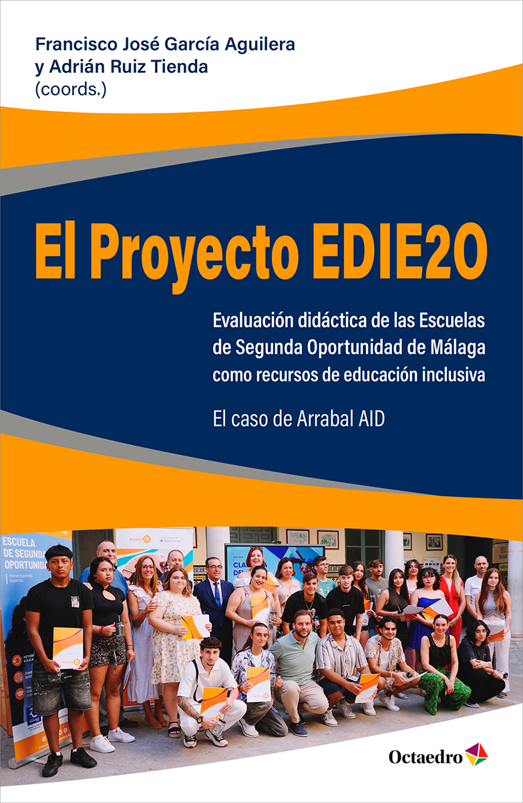
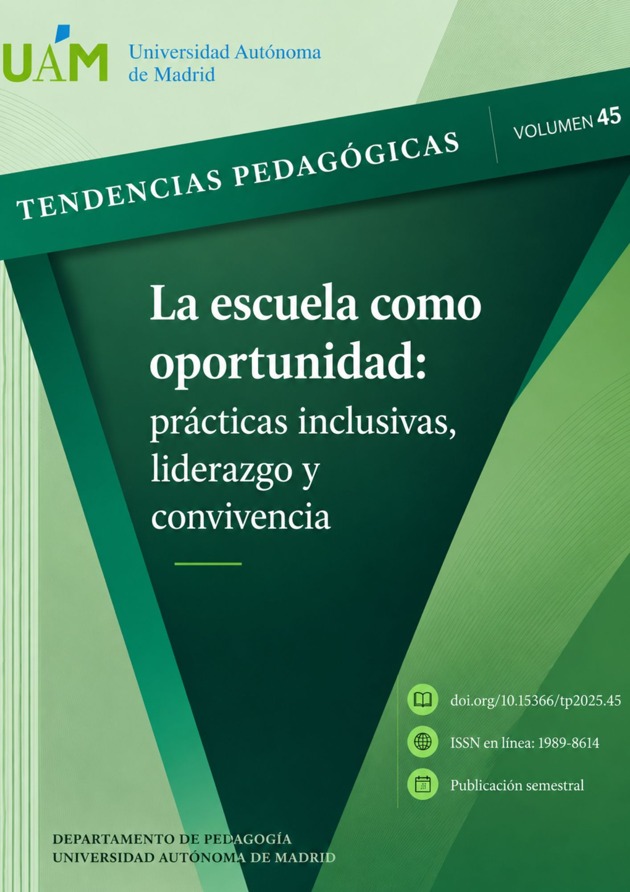

 Libro · 2026 El Proyecto EDIE2O Evaluación didáctica de las Escuelas de Segunda Oportunidad de Málaga como recursos de educación inclusiva. El caso de Arrabal AID Coordinado por Francisco José García Aguilera y Adrián Ruiz TiendaEditorial Octaedro · Acceso abierto
 Artículo · 2026 El papel del liderazgo pedagógico inclusivo en la construcción de las prácticas educativas en una Escuela de Segunda Oportunidad García Aguilera, F. J., Ruiz Tienda, A., Aguilar Cuenca, D. y Álvarez Morales, M. J.Tendencias Pedagógicas, 45, 32–49